SAP Business One이란?
중견·중소기업 운영에 최적화된 ERP입니다. 회계, 재무, 재고, 제조 등 핵심 프로세스를 통합 관리할 수 있습니다. 기업은 현지화된 기능을 통해 안정적 성장을 지원받고 글로벌 확장을 추진할 수 있습니다.
1등 파트너 웅진
웅진은 국내 1위 SAP Business One 파트너로 중견중소기업을 위해 강력한 비즈니스 컨설팅을 제공합니다.
웅진과 함께 완벽한 통합, 확장 가능한 유연함, 중요한 것에 집중할 수 있는 ERP솔루션을 경험하십시오.
최고의 컨설턴트가 함께 합니다.
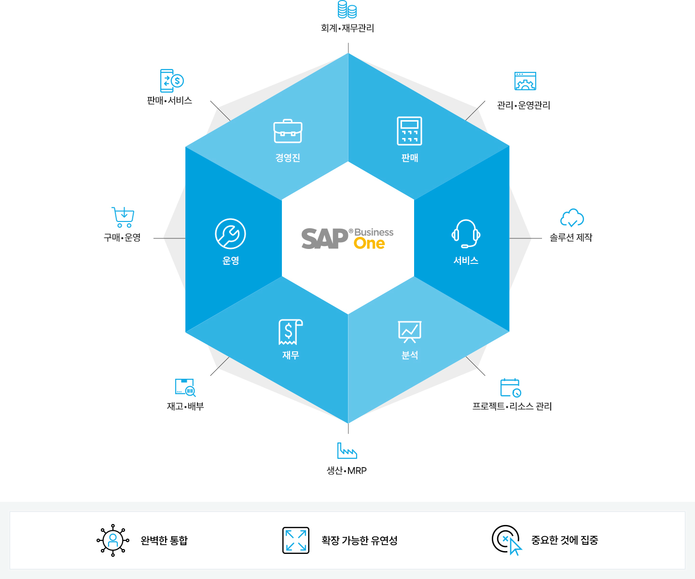
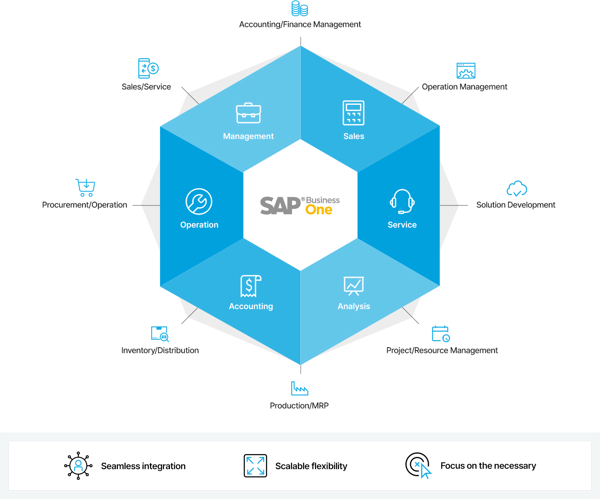
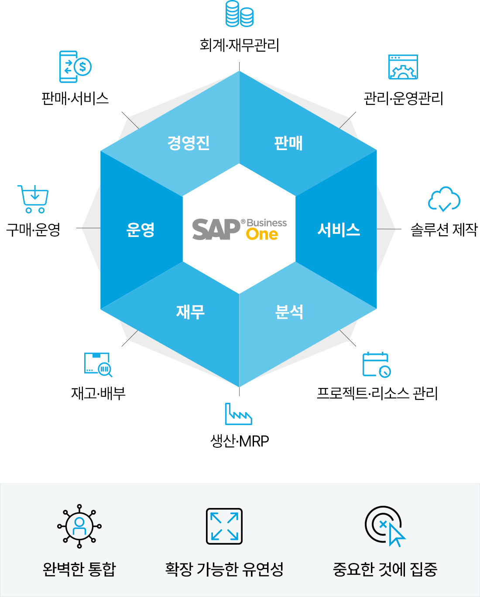
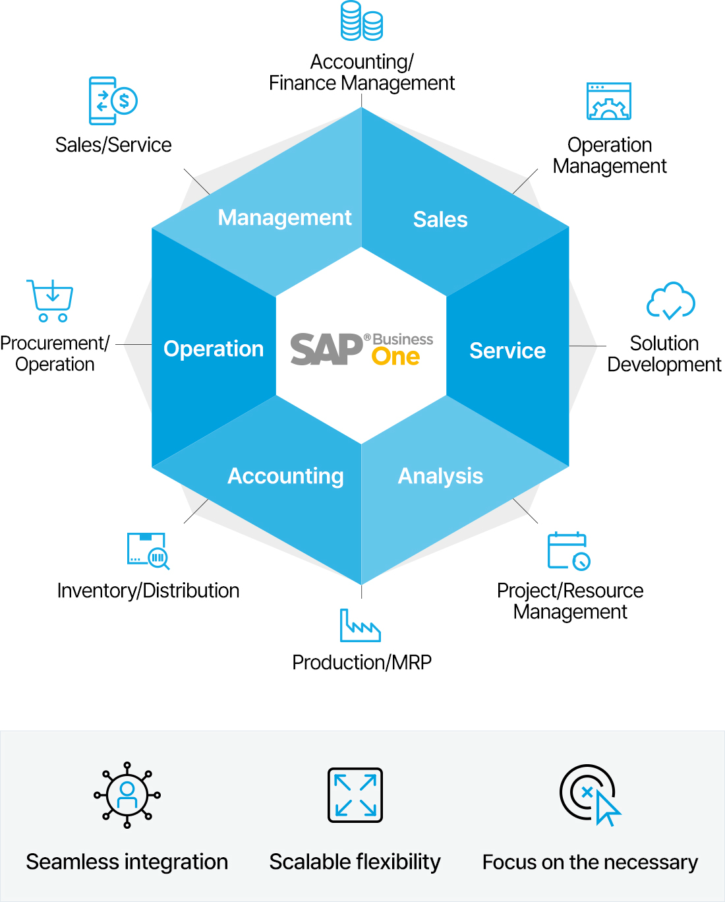
중견 중소기업을 위한 ERP, SAP Business One
기업의 성장을 위한 내부시스템은 가볍고 빠르게 처리되어야 합니다. 또한 기준 데이터 활용을 통한 예측과 분석이 가능해야 합니다.
시스템을 여러 번 교체할 필요가 없는 SAP Business One은 다양한 프로세스가 구현될 수 있도록 확장성을 보장합니다.
이를 통해 통합정보 기반의 지속 가능한 의사결정지원을 지원하고, 중견 중소기업의 성장을 가능하게 합니다.
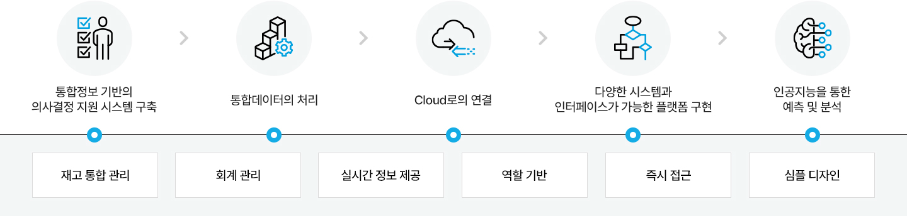
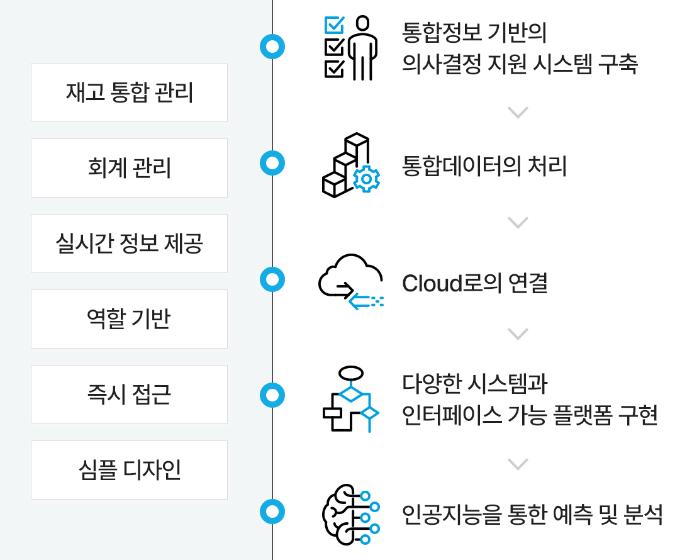
기업의 성장과 함께 하는 SAP Business One
스타트업부터 성장하는 중소중견기업을 위해 프로세스를 효율적으로 관리하고 적시의 정보를 토대로 의사결정을 내리며, 수익성 있고 성장 가능한 ERP를 만나보세요.
SAP Business One ERP는 기업 혁신을 지원할 수 있는 강력한 도구입니다.
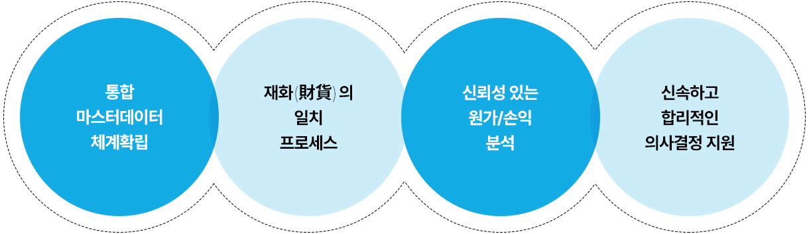
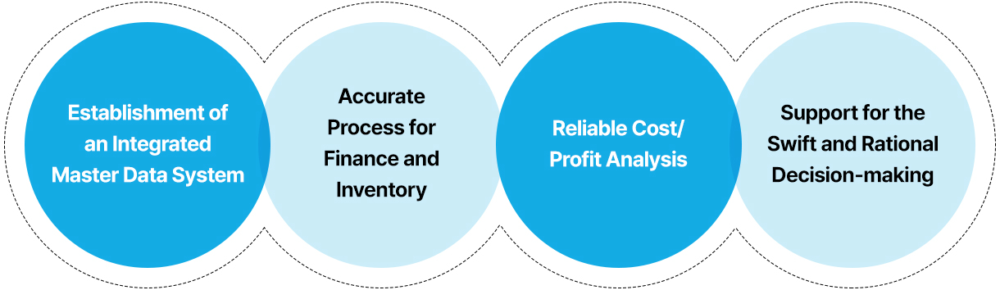
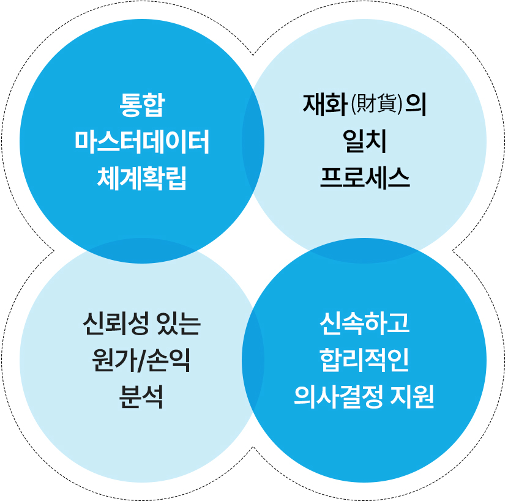
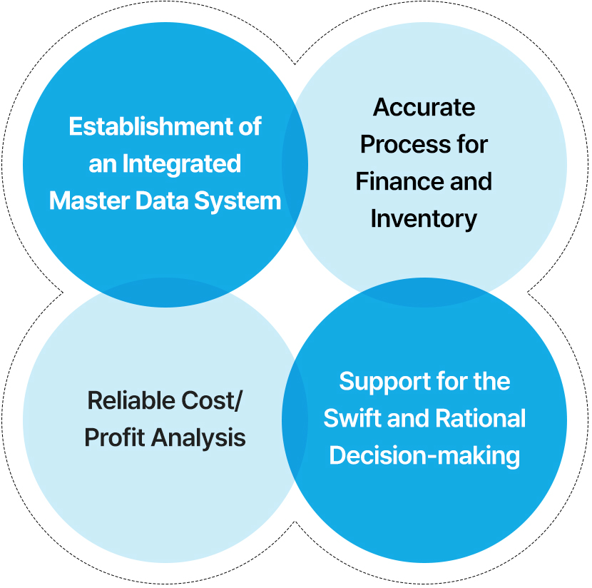
SAP Business One 특장점
SAP Business One은 SAP HANA 인메모리 컴퓨팅 성능을 활용하여 기업들이 보다 영리하고 빠르고 단순하게 회사를 운영하여 경쟁력을 확장할 수 있도록 지원합니다.
한국에서의 지속적인 성장을 도모하는 기업과 글로벌 확장을 모색하는 기업, 모두에게 SAP Business One은 최적의 선택입니다.
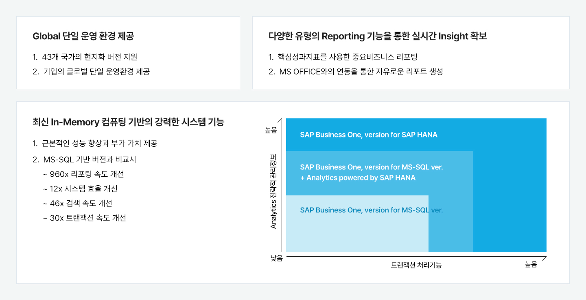
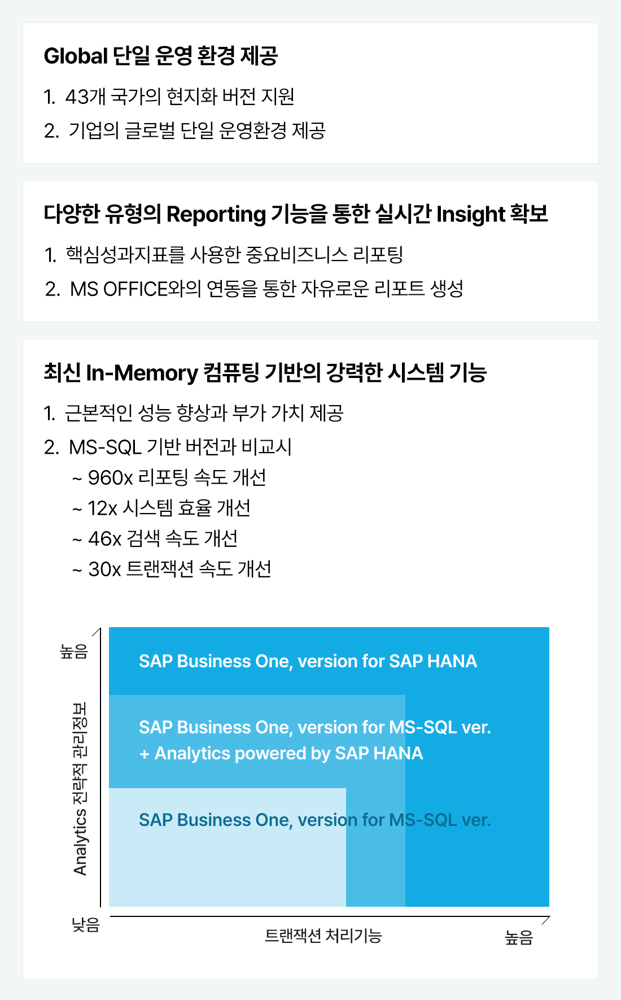
한국형 SAP ERP의 완성
기업고객에 맞게 '웅진 Add-On'으로 커스터마이징을 도와드립니다.
국내 최다 수준인 450여개의 커스터마이징 모듈은 표준화된 프로세스를 더욱 손쉽고 강력하게 지원합니다.
웅진이 완벽하게 구현한 한국형 ERP를 만나보십시오.
SAP 코어모듈
- FI (Financial) : 일반회계
- CO (Controlling) : 관리회계
- SD (Sales and Distribution) : 영업
- PP (Production Planning) : 생산관리
- MM (Material Management) : 자재
- BC (Basic Component) : 인프라
웅진 Add-On 영역
인사고과
- e-HR (Electronic HR)
- HSS (HR Staff Self Service)
- ESS (Employee Self service) : 그룹웨어
고객관리
- CRM (고객관계관리시스템)
- SCM (공급망관리시스템)
- PMS (프로젝트관리시스템)
정보관리
- BI (Business Intelligence) : 정보추출,리포팅
- BW (Business warehouse)
- EC (Enterprise Controlling) : 기업관리
자금관리
- TR (Treasury) : 자금
- CMS : 은행
- SAP 표준 확정형 모듈 8종※ 국내세법까지 지원하는 국내최초 B1 최적화 자금솔루션 보유
사내관리
- Mobile System
- 사내제안시스템
- EVS
- MSS(Manager Self Service)
- SCP (SAP ePaaS)
공정관리
- QMS / PDA (기기)
- MES (제조공정관리)
- POP (공정실적수집)
- PDM (Product Data Management)
- SFC (Shop Floor Control)
중견 중소기업을 위한 IT패키지 서비스, 클라우드 ONEPACK
기업의 성장속도에 따라 업무는 매우 다양해지고 복잡한 업무를 처리하게 되기 때문에 IT시스템은 기업의 성장 속도보다 빠르게 구현되어야 하고 신규 프로세스 생성에 따른 시스템 도입 방식을 유연하게 선택할 수 있어야 합니다.
중견 중소기업을 위한 패키지 서비스인 클라우드 ONEPACK을 만나보세요. 오직 웅진만이 렌탈 방식으로 IT 시스템을 제공합니다.
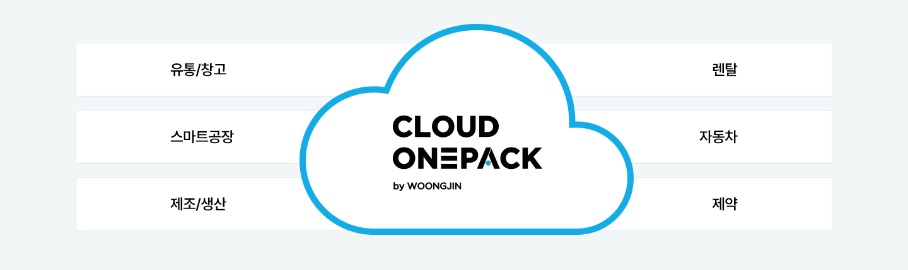
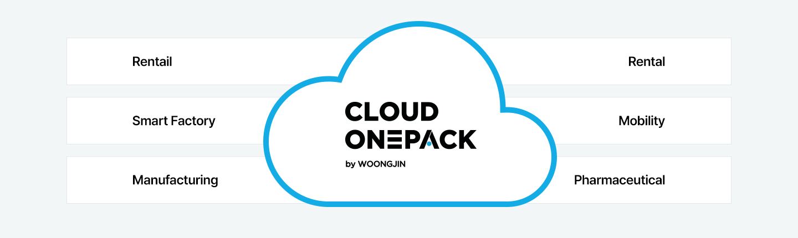
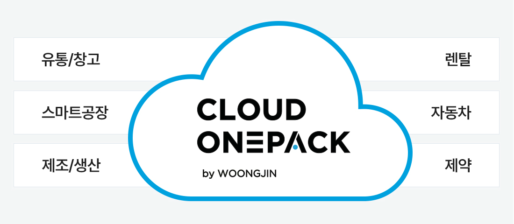
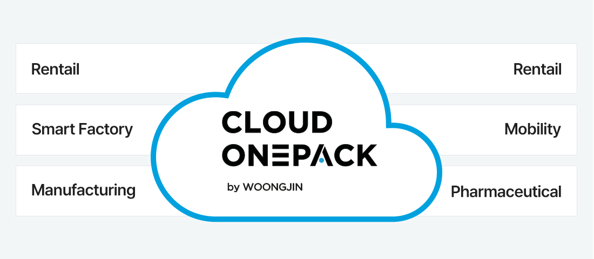
 BMW코리아BMW Korea on DMS
BMW코리아BMW Korea on DMS
BMW코리아는 비즈니스 확대에 따른 효율적 운영을 위해 서비스의 신뢰성과 확장성이 중요해졌습니다. 클라우드의 장점인 글로벌 비즈니스의 확대, 빠른 대응 및 안정적인 운영을 위해 웅진과 함께 AWS 클라우드 기반의 DMS를 도입했습니다.
[의의]
- EKS 클러스터에 자동화되고 신뢰할 수 있는 인프라를 구현하여 보다 확장성 있는 서비스 제공
- 판매 시스템 업그레이드 및 안정성 보장